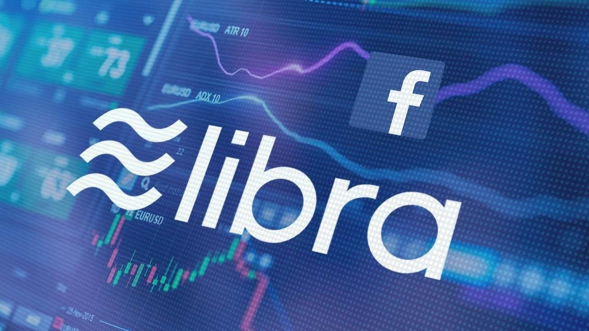

La Libra
 La Libra n’est pas la crypto-monnaie appartenant Facebook, cependant Facebook a cofondé la Libra Association, une organisation à but non lucratif qui aura pour but d’être l’autorité monétaire de la Libra. L’objectif premier selon Libra association serait de donner à des milliards de personnes sans compte bancaire du pouvoir, en effet, elle permettrai d’effectuer des transfert monétaire instantané sans aucun frais entre tous les pays où Facebook est présent. Elle permettra ainsi de voyager dans un autre pays sans avoir à transporter de l’espèce. La Libra serait donc une monnaie mondial accessible à tous, elle créera de l’emploi et permettra de faire croître l’économie de certain pays, les développer et ainsi réduire le taux de pauvreté à l’échelle mondiale. Aussi, la Libra se différencie des autres monnaies en ne subissant pas la volatilité du marché, elle sera donc plus stable du fait de son rattachement à des actifs, ainsi cela permettrait d’inclure des devises mondial qui ne fluctuent pas de manière brutal comme l’euro ou le dollars.
De plus, différent cofondateur sont dans le secteurs du paiement et des transactions sur Internet comme Mastercard Visa ou encore PayPal, cela lui confère du poids et un argument de défense face aux opposants. Elle reposera sur le même système que les autres crypto-monnaie, les transactions s’effectueront via la technologie de blockchain.
Cependant malgré des aspects positifs clair que pourrait proposer cette nouvelle crypto-monnaie selon Libra Association, elle suscite beaucoup de débats et ne nombreuse entité qui s’oppose sa mise en circulation.
Mark Elliot Zuckerberg : Fondateur de Facebook